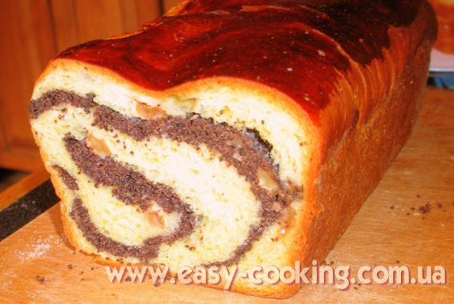

Маківник

Маківник, або завиванець з маком, можна вважати класичною випічкою на Великдень. В Україні традиційно готують завиванці на дріжджовому тісті, а начинки можна класти найрізноманітніші. Найчастіше у якості начинки використовують мак, горіхи, також сир, яблука, вишні.
Але сьогодні про мак :). Для приготування дріжджового тіста на рулет, ми використовуємо рецепт паски, тільки без родзинок. Якщо на Великдень печете паску самостійно, то заодно можете спекти і завиванець, тільки тіста треба замісити трохи більше. Кількість макової начинки подаю з розрахунку на півкілограма борошна.
Інгредієнти
- 2 скл. маку
- 2-3 ст.л. масла
- цукор або мед за смаком
- жменька родзинок
- трохи горіхів
- 0,5 скл. цукрової пудри
- сік і цедра з 1 лимона
- 1 чарка коньяку
Приготування
Мак запарте кип’ятком хвилин на 20, тоді відцідіть та перетріть у макітрі до виділення білуватого макового молочка. Замість перетирати у макітрі, можна спробувати пропустити мак кілька разів через м’ясорубку або скористатися блендером. Але я ще не бачила, щоб якась техніка змолола мак краще, ніж наша українська макітра. Якщо є якісь ще варіанти, як перетерти мак – кажіть :).
На пательні розігрійте масло, додайте мак, цукор або мед за смаком і кілька хвилин посмажте так на малому вогні. Білки добре збийте з цукровою пудрою, тоді зніміть з вогню мак, трохи охолодіть і змішайте білкову піну з начинкою. Додайте родзинки, мелені горіхи, сік з лимона, коньяк.
Готове тісто розкатайте дуже тонко, тоді накладіть на нього начинку на скрутіть рулетом. Я, коли місила паску, забула, що запланувала ще й рулет, тому тісто на рулет у мене з родзинками – нічого, так теж незле ;). До всього, я дала ще й дуже багато мелених горіхів, так що рулет вийшов маково-горіховий, але тут краще вже регулюйте за своїми власними уподобаннями та смаками.

Викладіть маківник у форму та випікайте при температурі близько 200 градусів – ця процедура займе десь хвилин 40. З півкілограма борошна у мене виходить два рулети.
Смачного!